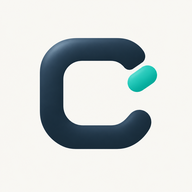
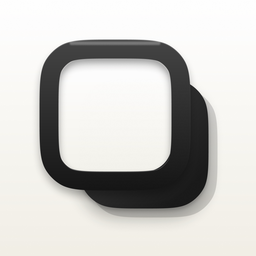
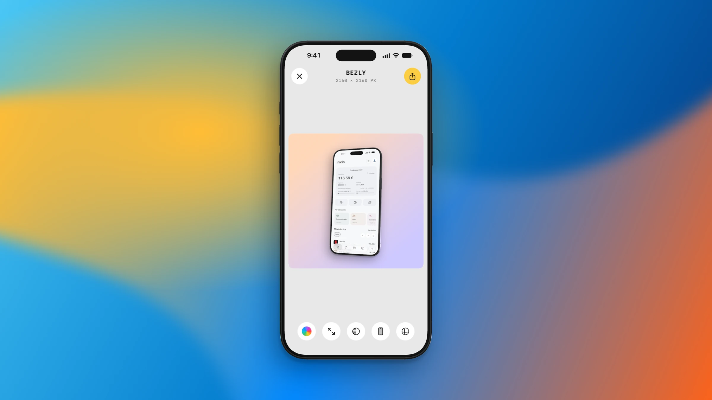
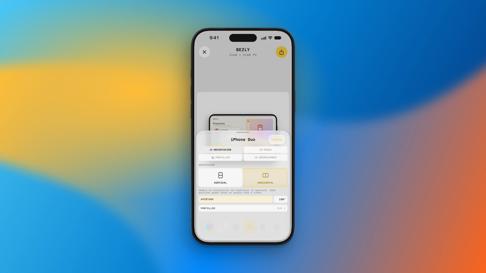
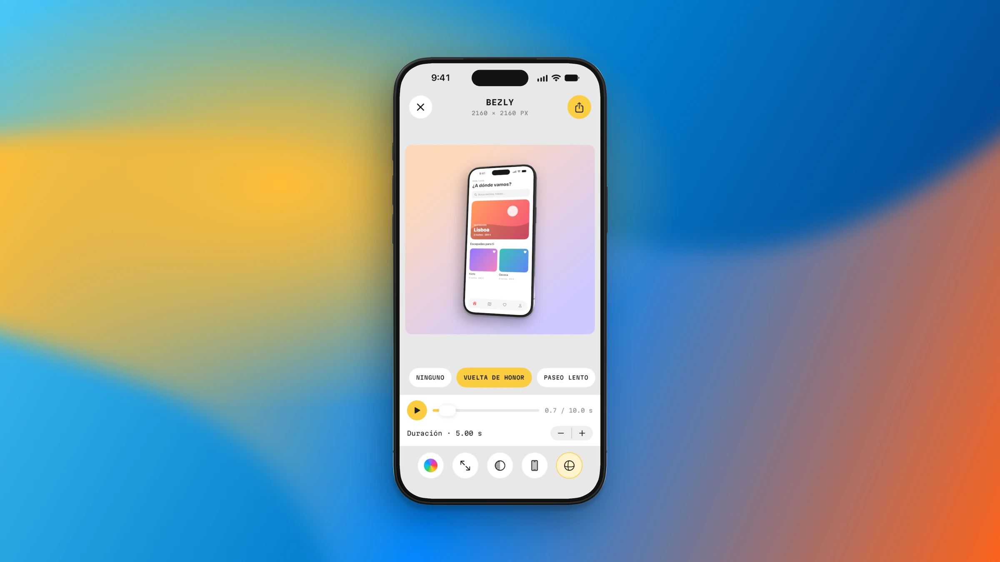
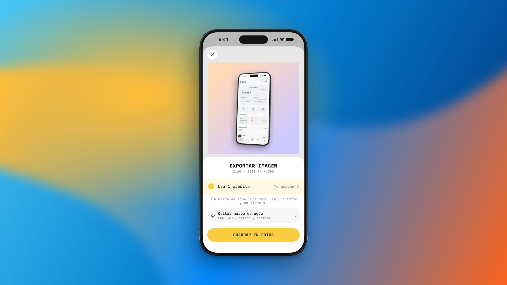

01 / Compose
Your app, in its best light.
Bring a screenshot into the studio, choose a frame and build a composition that feels like your app.
Device frames
Custom backgrounds

clr91dev
Bezly ↗Turn screenshots and recordings into polished device mockups, right on your iPhone, iPad and Mac. From the first frame to the final export.
Made for iPhone, iPhone Duo, iPad & Mac

Bezly Make it yours. iPhoneThe idea
A complete mockup studio, wherever your ideas happen. Choose a device, make the composition your own and export an asset ready for the App Store or your next post.
01 / Compose
Bring a screenshot into the studio, choose a frame and build a composition that feels like your app.
02 / Devices
Explore device models and orientation controls, including the open and folded views of iPhone Duo.

03 / Motion
Explore animation presets and the timeline to turn a still composition into something that moves.

04 / Export
Review your composition, choose the output and export the image you need for your next post or app launch.

Privacy, by design
Editing and export happen on your device. You don’t need to upload your content to a server to create a mockup.
Read the privacy policy ↗